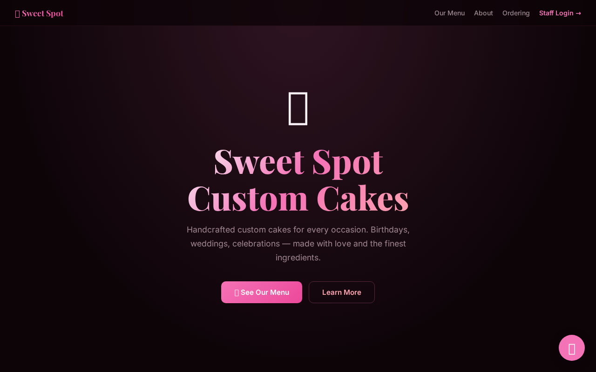
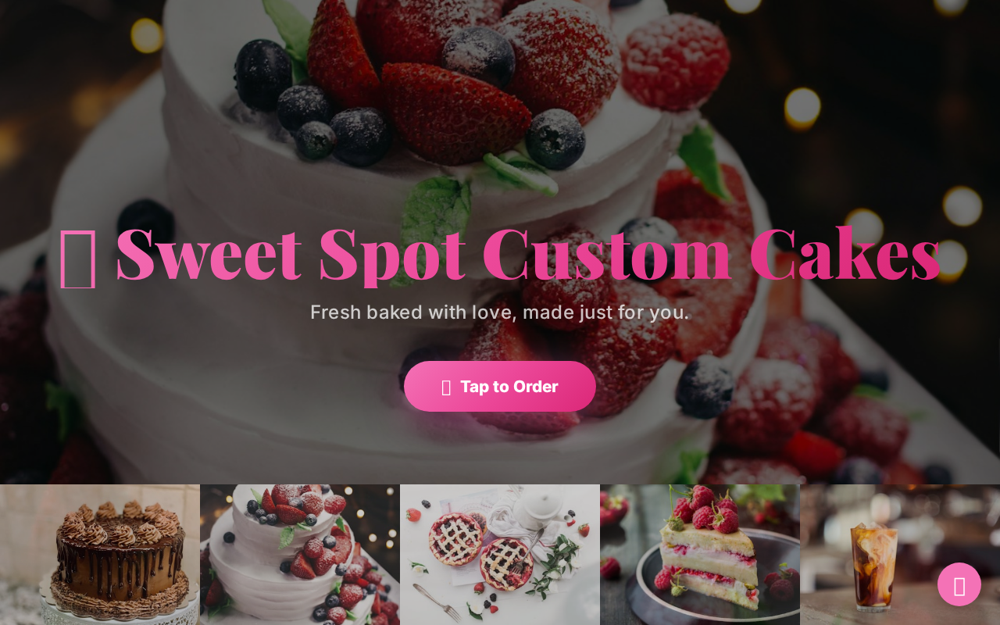
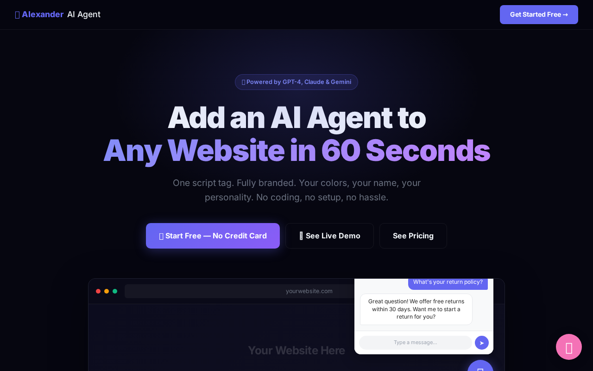

What You'll Do In This Lesson
Follow each step exactly as shown. Every screenshot is taken from the real app you'll be using. By the end of this lesson, you'll have completed the action shown in the title above.
Example: Sweet Spot Cakes Before the App
Let's walk through a real example of how a business problem becomes an app.
Sweet Spot Cakes — A Real Business Problem Solved

Before this app, the owner handled every order by phone and text message. Customers called at all hours. Orders got lost. Payment was cash or Venmo. Sound familiar? This app solved every one of those problems. Here's how we mapped it.
The Order Form — Old Problem, New Solution
What used to be a phone call is now a structured form.
The Order Form — Customers Fill It Out Themselves

Instead of taking orders by phone, customers fill this out online — any time, 24/7. Cake type, size, flavors, pickup date, special instructions — all captured in one place. No more missed calls. No more lost orders. The business owner checks their dashboard in the morning and sees every order.
Another Example: Contractor Pro
Same pattern for a service business.
Contractor Pro — Job Requests Without Phone Tag

Contractors spend hours playing phone tag with potential clients. This app captures job requests, collects photos, generates quotes, and tracks jobs — all online. The automation map was simple: Customer contacts you → instead of a call, they fill a form → the AI drafts a quote → you approve it → it goes out automatically.
The AI Layer — Adding an Agent On Top
Every app can have an AI agent added to it.
The AI Layer — Your Agent Works When You Don't

Once your app is live, you add an AI agent on top of it. The agent answers questions, collects information, and hands off to the app — 24 hours a day, 7 days a week. Your job is to check in on what's happening, not to be the first line of contact for every customer.